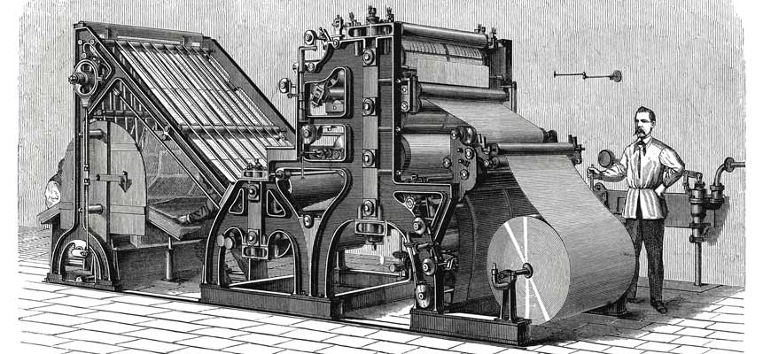

Explorando a História da Tecnologia

O século XVIII testemunhou o surgimento da Revolução Industrial, um período de transformação radical impulsionado pela automação e pela máquina a vapor.
As fábricas surgiram em todo o mundo, dando origem a uma nova era de produção em massa e urbanização.
Avanços como o telégrafo de Samuel Morse e a locomotiva a vapor de George Stephenson encurtaram as distâncias e conectaram continentes.
No século XX, a humanidade deu saltos monumentais em direção à modernidade.
A eletricidade iluminou cidades, enquanto a invenção do avião pelos irmãos Wright revolucionou o transporte.
A ascensão da eletrônica deu origem a computadores, televisões e dispositivos que moldaram o modo como vivemos, trabalhamos e nos comunicamos.